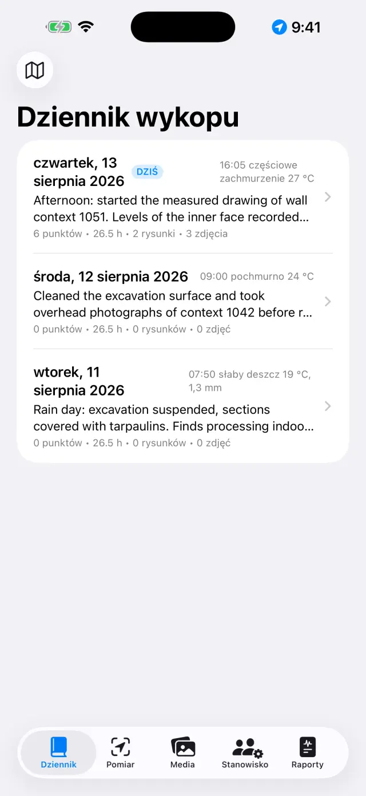
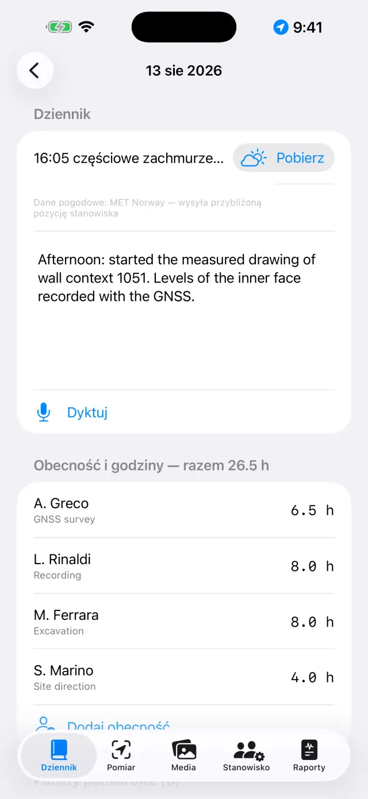
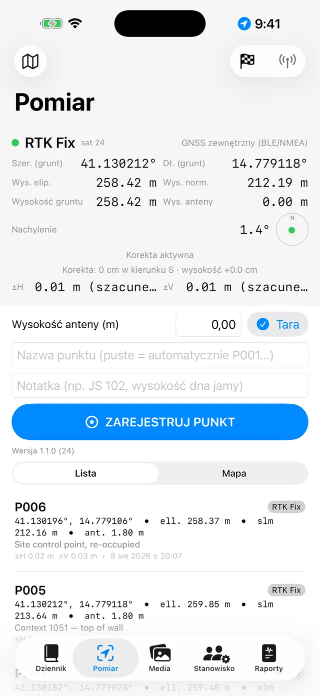
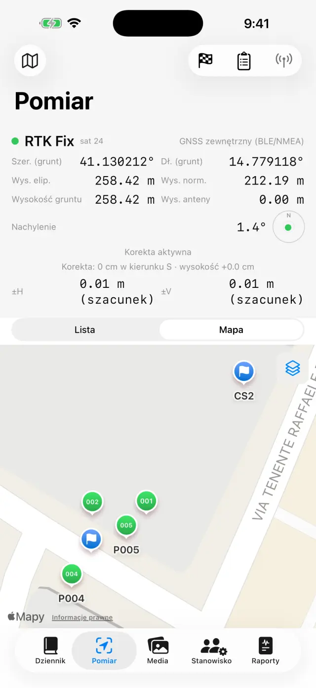
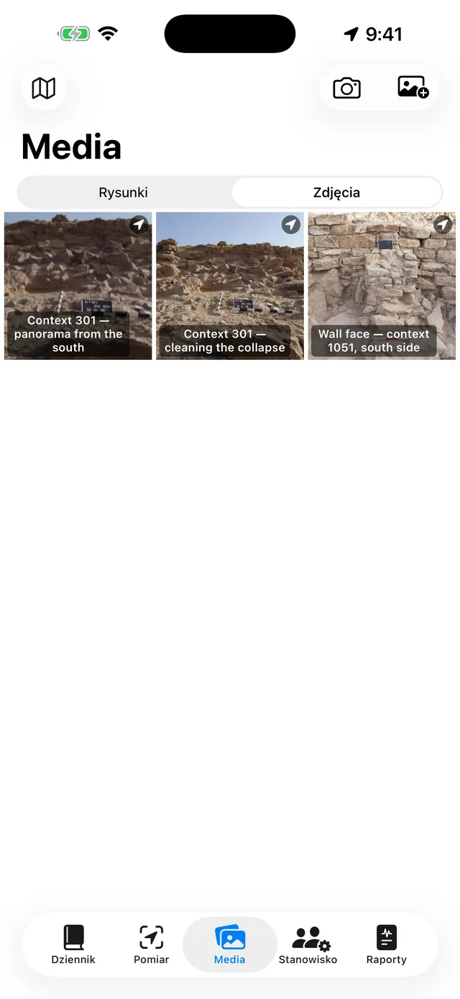
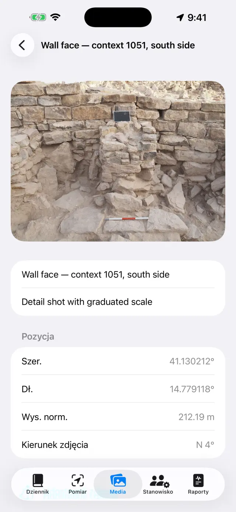
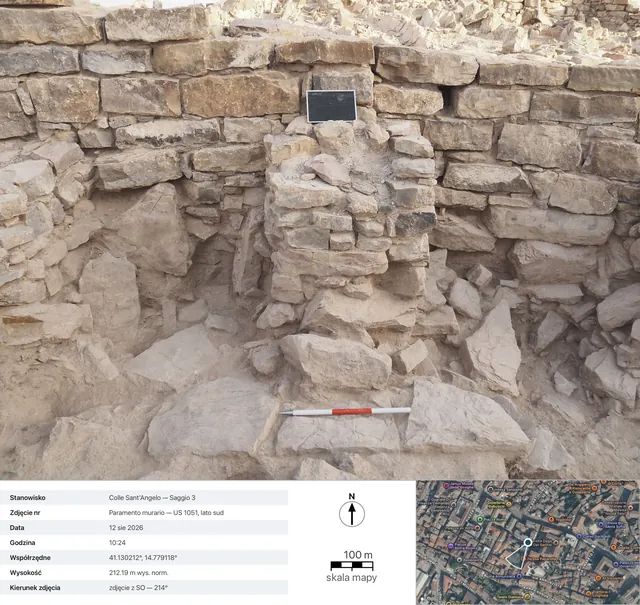
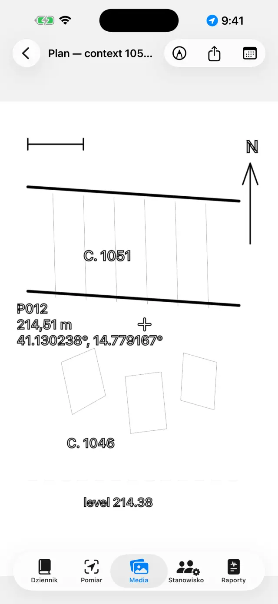
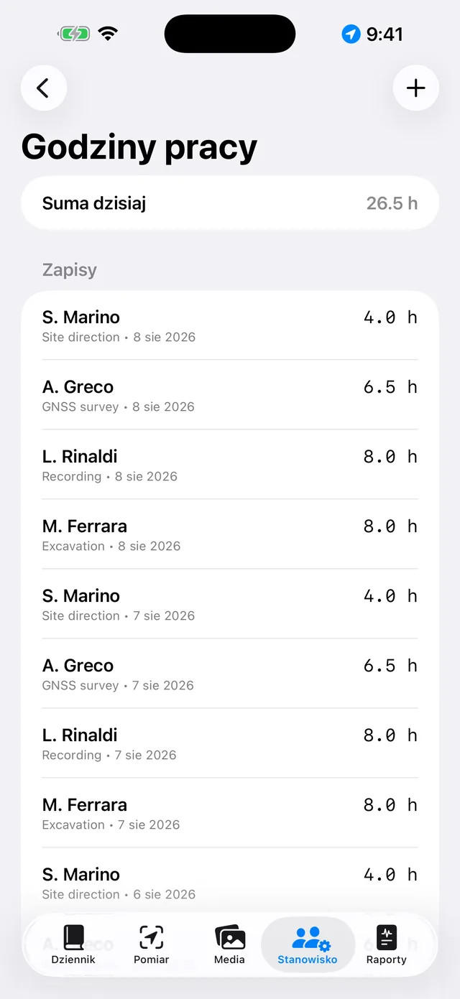
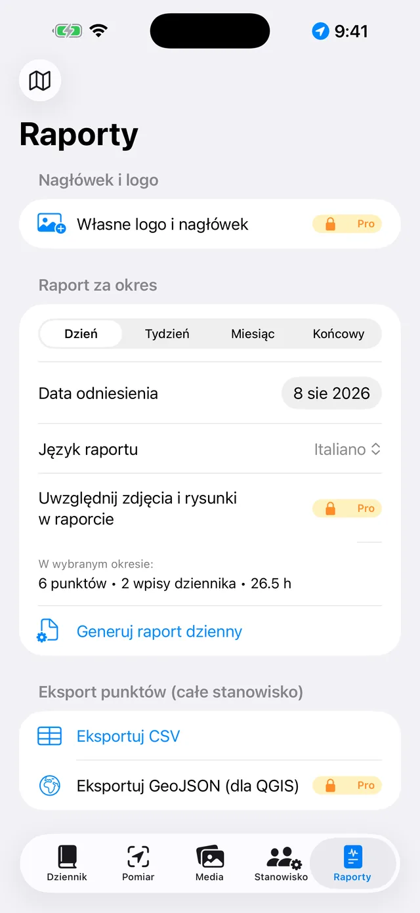

Cyfrowy dziennik wykopalisk na iPhone'a i iPada. 100% offline: dane pozostają na urządzeniu.
Krótko mówiąc
Liczy się jedna idea: każdy dzień wykopalisk to strona, która
wypełnia się sama. Rzeczy rejestruje się tam, gdzie mają miejsce — punkt GNSS w
zakładce Pomiar, zdjęcie w Mediach, godziny na Stanowisku — a strona dnia w
zakładce Dziennik zbiera to wszystko automatycznie. Pod koniec
tygodnia lub wykopalisk raporty powstają same na podstawie stron.
Typowy dzień
RanoOtworzyć stronę dnia, zanotować pogodę i wpis w dzienniku (można też podyktować przyciskiem Dyktuj)
ObecnośćNa zakładce Stanowisko zarejestrować, kto jest obecny, i godziny każdej osoby
PomiarZarejestrować punkty GNSS; przy RTK najpierw sprawdzić reper
ZdjęciaFotografować w zakładce Media: współrzędne dołączają się same
RysunkiOdrysować przekrój lub plan na zdjęciu (cyfrowa kalka)
WieczoremZ zakładki Raporty wygenerować raport dzienny: PDF gotowy do wysłania
Pierwsze kroki
Przy pierwszym uruchomieniu jest już dostępne przykładowe stanowisko. Aby
utworzyć własne, dotknąć nazwy stanowiska u góry (ikona 🗺) →
Nowe stanowisko… i nadać mu nazwę (np. „Colle Sant'Angelo —
Wykop 3”).
Nazwa aktywnego stanowiska jest zawsze widoczna u góry: wszystkie zakładki
pokazują dane tego stanowiska. Aby zmienić stanowisko, dotknąć nazwy
ponownie: lista znajduje się pod nagłówkiem „Twoje stanowiska”, a dzięki
Przemianuj stanowisko… można poprawić nazwę, nie tracąc
niczego.
Udzielić uprawnień, gdy zostaną poproszone: lokalizacja (dla
punktów), aparat (dla zdjęć), mikrofon (dla dyktowania),
Bluetooth (tylko przy użyciu zewnętrznego odbiornika).
Pięć zakładek
📓 Dziennik
Dotknąć dnia, aby otworzyć jego stronę: dziennik, pogoda, obecność,
punkty, zdjęcia i rysunki tego dnia są już tam.
Napisać dziennik lub dotknąć Dyktuj i mówić: transkrypcja
odbywa się na urządzeniu i działa też bez sieci.
Pogodę można wpisać ręcznie (np. „Słonecznie, 28°C, słaby wiatr”) lub
pobrać przyciskiem Pobierz, który pyta norweską służbę
meteorologiczną o aktualne warunki. Potrzebna jest sieć, a funkcja działa
tylko dla dzisiejszej strony: pogody z wczoraj nie da się już odzyskać.
Drugie dotknięcie po południu dodaje kolejny pomiar. To, co wpisano ręcznie,
zawsze ma pierwszeństwo.
Przy pobieraniu z urządzenia wychodzi tylko pozycja okolicy zaokrąglona do
około 11 metrów, a w raportach wiersz pojawia się w języku raportu.

Lista dni

Strona dnia
📍 Pomiar
Panel u góry pokazuje pozycję na żywo: współrzędne, wysokości, dokładność
i typ fix (GPS / RTK Float / RTK Fix).
Przy użyciu tyczki ustawić Wysokość anteny (m): wysokość punktu
jest automatycznie sprowadzana do gruntu.
Dotknąć Zarejestruj punkt. Nazwy są nadawane kolejno (P001,
P002…), ale można wpisać własną (np. „JS 102 — dno jamy”) i dodać notatkę.
Przełączać się między Lista a Mapa, aby zobaczyć
punkty w terenie; z mapy można włączyć katastr lub inną usługę WMS.
Repery (🏁) mają własną sekcję: zaimportować je z CSV lub utworzyć, a
następnie otworzyć Weryfikacja na żywo i obserwować odchyłki
ΔPn./ΔWsch./ΔWys. z grotem tyczki opartym o reper, zanim zacznie się
pomiar.
Pod pozycją Dzienniki niwelacji kryje się dziennik polowy dla
niwelatora optycznego: stanowiska niwelatora, odczyty wstecz i w przód,
wysokości obliczane od repera początkowego, z kontrolą zamknięcia. Punkty
niwelowane trafiają do stanowiska z wysokością, tak jak punkty GNSS.
Pod panelem znajdują się Nagrania NMEA: surowy strumień
zewnętrznego odbiornika PRO sam trafia do plików —
nagrywanie zaczyna się po włączeniu anteny i kończy po jej wyłączeniu, bez
potrzeby pamiętania o tym. Przydaje się do ponownego prześledzenia
wątpliwego dnia albo do przekazania surowych danych osobie wykonującej
postprocessing. Pliki można udostępniać i usuwać, poza plikiem trwającego
nagrania; lista otwiera się także przy wyłączonym odbiorniku, więc wczorajsze
pliki pozostają w zasięgu ręki.

Panel GNSS zakładki Pomiar

Punkty i repery na mapie
Każdy punkt zapisuje obie wysokości:
elipsoidalną i normalną (n.p.m.). Przy wewnętrznym GPS telefonu wysokość
n.p.m. może być niedostępna: potrzebny jest wtedy zewnętrzny odbiornik
(patrz niżej).
📷 Media
Fotografować przyciskiem aparatu lub importować z biblioteki zdjęć.
Zdjęcia otrzymują kolejną nazwę (F001, F002…) i są georeferencjonowane
ostatnią dostępną pozycją GNSS.
Przy robieniu zdjęcia aplikacja rejestruje też kierunek
patrzenia z kompasu: w szczegółach zdjęcia i w raportach pojawia się
opis „widok z SO — 214°”, a dla zdjęć wykonanych pionowo (rzut, dno warstwy)
opis zenitalny z kierunkiem górnej krawędzi. Jeśli kompas jest zakłócony,
aplikacja to sygnalizuje.
Dotknąć zdjęcia, aby nadać tytuł i notatki (np. „JS 102 od północy”).
Udostępnij kartęPRO generuje
fotograficzną kartę dokumentacyjną: zdjęcie, a pod nim dane
wykonania (stanowisko, numer, data i godzina, współrzędne, wysokość,
kierunek), widok satelitarny ze znacznikiem pozycji i stożkiem widzenia,
pasek skali mapy oraz strzałka północy. Mapa wymaga sieci: bez niej karta i
tak powstaje, z powiększonym panelem danych.

Galeria zdjęć

Szczegóły zdjęcia: współrzędne, wysokość i kierunek patrzenia

Wyeksportowana karta: dane wykonania, widok satelitarny ze stożkiem widzenia, pasek skali mapy i strzałka północy
✏️ Rysunki (w Mediach)
Utworzyć nową planszę i wybrać zdjęcie stanowiska jako tło: to cyfrowa
kalka. Rysunek może być kontynuowany przez kilka dni. Zdjęcia można też w
ogóle nie wstawiać: na białej kalce rysuje się tak samo.
Odrysować warstwy, przekopy i kamienie palcem lub Apple Pencil.
Uszczypnąć, aby powiększyć (do 6×, podwójne stuknięcie dwoma
palcami, aby wrócić do 1×). Jeśli zdjęcie zasłania kreskę, w menu aparatu
wybrać Krycie tła… i ustawić je tam, gdzie potrzeba, od 5% do 100%:
blednie zdjęcie, nie rysunek. Wybór zostaje przy planszy i obowiązuje także w
PDF, DOCX, PNG oraz w Eksportuj z legendą.
Cała reszta znajduje się w Narzędzia (klucz płaski na pasku),
czyli w spisie sześciu trybów: Pole tekstowe,
KalkowaniePRO, Skala zdjęcia,
Punkt z wysokością, Deseń i Styl linii.
Włączony jest tylko jeden naraz: ptaszek pokazuje który, a
dopóki jest włączony, palec nie rysuje, tylko steruje tym narzędziem — aby
wrócić do rysowania, dotknąć ponownie zaznaczonej pozycji. Trzy tryby
pracujące na obrazie (kalkowanie, skala, punkt wysokościowy) pojawiają się
tylko wtedy, gdy jest zdjęcie w tle.
Za pomocą Pole tekstowe wstawia się etykiety (np. „JS 1002”):
można je przesuwać, zmieniać rozmiar uszczypnięciem i wybierać spośród
czterech czcionek.
KalkowaniePRO rozpoznaje kontur
dotykanego obiektu (kamienia, granicy warstwy) i zamienia go w kreskę: kolor,
grubość i styl linii można zmieniać bez wychodzenia z trybu, a kontury
wychodzą gładkie zamiast schodkowych. Wszystko odbywa się na urządzeniu, bez
sieci.
Wewnątrz kalkowania Skalkuj wszystkoPRO samo obchodzi całe zdjęcie. W arkuszu startowym
wybiera się wygląd — Tylko kontury albo deseń i ewentualnie
Powłoka barwna — i naciska Rozpocznij: pasek pokazuje,
na jakim etapie jest praca, a trwa ona kilkadziesiąt sekund. To, co się
pojawia, jest podglądem, a nie rysunkiem: dotknięcie wnętrza
kształtu wyklucza go, kolejne przywraca (spośród nakładających się kształtów
wygrywa najmniejszy pod palcem), Przebieg dokładny powtarza pracę
tylko tam, gdzie nic nie znaleziono, a Zastosuj przenosi na rysunek
to, co zostało. Dopóki się nie zastosuje, plansza pozostaje nietknięta.
Za pomocą narzędzia Skala zdjęcia (linijka) dotknąć dwóch
końców znanego odcinka — na przykład odcinka łaty mierniczej — i wpisać
rzeczywistą odległość: zdjęcie uzyskuje skalę, a od tej chwili eksporty
operują w metrach.
Za pomocą Punkt z wysokością umieścić na zdjęciu krzyżyk
punktu GNSS ze stanowiska (albo punktu wpisanego ręcznie): nazwa, wysokość i
współrzędne pojawiają się w przeciągalnej etykiecie z linią odniesienia.
Uszczypnięcie na zaznaczonej etykiecie zmniejsza ją lub powiększa, gdy
wartości zasłaniają rysunek.
Deseń wypełnia kształty: dotknąć wnętrza
zamkniętego kształtu, a ten się wypełni. Jest dziesięć deseni
konwencjonalnych — Mur / kamień, Cegła, Zaprawa /
tynk, Glina, Muł, Piasek,
Żwir, Węgiel drzewny / popiół, Skała
macierzysta, Drewno — oraz Powłoka barwna (kolor z
własnym kryciem), osobno albo razem. Jeśli jeden kształt leży wewnątrz
drugiego, wygrywa najmniejszy pod palcem; Usuń wypełnienie czyści
go. Zdjęcie nie jest potrzebne: wypełnianie pracuje na narysowanych
kształtach, więc działa też na białej kalce.
Styl linii ubiera kreskę już narysowaną:
dotknąć jej i wybrać spośród Ciągła, Kreskowana,
Kropkowana i Kreska-kropka, regulując grubość.
Rysuj tym stylem sprawia, że kolejne kreski rodzą się już ubrane;
Usuń styl przywraca linię pełną. To nie jest efekt ekranowy:
kreseczki są prawdziwymi odcinkami i pozostają nimi w PDF, DOCX, PNG, SVG i
DXF.
Eksportuj z legendąPRO: obraz
wychodzi z białym paskiem na dole — pasek skali (jeśli skala jest ustawiona),
strzałka północy dla zdjęć wykonanych pionowo, „widok z” dla zdjęć
frontalnych.
Eksportuj wektorowoPRO: SVG dla
rysunku albo DXF dla GIS. Przy co najmniej dwóch punktach
wysokościowych ze współrzędnymi na zdjęciu wykonanym pionowo, DXF wychodzi
georeferencjonowany w układzie UTM i w QGIS sam ustawia się
na swoim miejscu na świecie; przy samej tylko skali wychodzi w metrach
lokalnych; bez jednego i drugiego aplikacja to sygnalizuje i nie tworzy
pliku bez jednostek. SVG stanowi wyjątek co do krycia: osadza oryginalne
zdjęcie w niezmienionej postaci, więc przygaszone tło wychodzi tam z pełną
siłą.
Po zakończeniu ukryć zdjęcie: pozostaje czysty rysunek, gotowy do
raportu.

Cyfrowa kalka
👷 Stanowisko
Zarejestrować obecność danego dnia: imię i nazwisko, funkcję oraz godziny
każdej osoby.
Prowadzić ewidencję sprzętu i przypisania go do osób.

Obecność i godziny
📄 Raporty
Wybrać typ: dzienny (bezpłatny, ze znakiem wodnym),
tygodniowy, miesięczny lub
końcowy z pełnymi załącznikami PRO.
Wybrać język raportu spośród siedemnastu, niezależnie od
języka aplikacji: raport może zostać wygenerowany po angielsku, nawet jeśli
aplikacja działa po polsku.
Wygenerować PDF albo wyeksportować DOCX z logo i zdjęciami
PRO, CSV punktów, GeoJSON dla QGIS
PRO.
Przy włączonych zdjęciach w raportach można wybrać Karty
fotograficzne zamiast zdjęćPRO: każde
zdjęcie trafia do PDF i DOCX jako pełna karta dokumentacyjna z danymi i mapą,
w języku raportu.

Generowanie raportów
Zewnętrzny odbiornik GNSS i NTRIP
Z zewnętrznym odbiornikiem (antena o dokładności centymetrowej) aplikacja
osiąga dokładność RTK. Wewnętrzny GPS pozostaje zawsze dostępny jako
rozwiązanie zapasowe.
Włączyć odbiornik i aktywować Bluetooth w telefonie.
Na zakładce Pomiar wybrać źródło pozycji: GNSS zewnętrzny
(BLE/NMEA)PRO i wybrać odbiornik z listy.
Obsługiwane są też odbiorniki MFi (bezpłatnie) oraz odbiorniki udostępniające
NMEA w sieci.
Do poprawek RTK skonfigurować NTRIP: adres castera, port,
mountpoint, nazwę użytkownika i hasło (przechowywane w pęku kluczy
urządzenia). Aplikacja wysyła pozycję do castera i odbiera poprawki.
Poczekać na przejście do RTK Fix: dokładność
centymetrowa. Przed rozpoczęciem sprawdzić na reperze.
Tam, gdzie telefon nie ma zasięgu, istnieje też droga
bez internetu: baza ustawiona na znanym punkcie i rower,
które wymieniają się poprawkami przez radio LoRa, bez castera
i bez karty SIM (zestaw RTK DFRobot z mostkiem ESP32). Dla aplikacji nic się
nie zmienia — odbiera od odbiornika już poprawiony NMEA — a montaż mostka jest
opisany osobno, we własnym pliku README: to pozostaje przewodnikiem po
aplikacji, a nie podręcznikiem oprogramowania układowego.
Kopia zapasowa i wymiana
Z menu stanowiska dotknąć Eksportuj stanowisko (.zip): w środku
jest wszystko — dziennik, punkty, zdjęcia, rysunki, godziny, repery.
Przechowywać ZIP, gdzie się chce (Pliki, Drive, e-mail…). To kopia
zapasowa: aplikacja celowo nie ma chmury.
Importuj stanowisko (.zip)… odtwarza stanowisko na innym
urządzeniu, także między iPhone'em a Androidem.
⚠️ Usuń stanowisko… usuwa stanowisko wraz z całą
zawartością i jest to działanie nieodwracalne: w razie
wątpliwości najpierw wyeksportować ZIP.
Pro to subskrypcja miesięczna lub roczna z automatycznym odnawianiem, albo
jednorazowy zakup dożywotni. Zarządzanie i anulowanie jest możliwe w dowolnym
momencie w ustawieniach identyfikatora Apple.
Rozwiązywanie problemów
Odbiornik Bluetooth nie pojawia się lub nie łączy się
Sprawdzić po kolei:
odbiornik jest włączony i nie jest już połączony z inną aplikacją lub
telefonem;
Bluetooth systemowy jest włączony, a aplikacja ma uprawnienie Bluetooth
(Ustawienia → Giornale di Scavo);
źródło wybrane na Pomiarze to GNSS zewnętrzny (BLE/NMEA);
wyłączyć i włączyć ponownie odbiornik, a następnie powtórzyć
wyszukiwanie.
Nigdy nie udaje się osiągnąć RTK Fix
Potrzebne jest aktywne połączenie NTRIP: sprawdzić caster, mountpoint i
dane uwierzytelniające.
Sprawdzić zasięg danych telefonu: poprawki docierają przez internet.
Liczy się otwarte niebo: gęste drzewa i pobliskie ściany osłabiają
sygnał. Przy słabych warunkach można pozostać w trybie RTK Float (dokładność
decymetrowa).
Wybrać bliski mountpoint (< 30–40 km) lub sieć VRS.
NTRIP nie łączy się
Zweryfikować adres i port (często 2101) oraz istnienie mountpointu:
większość casterów publikuje listę (sourcetable).
Błędna nazwa użytkownika lub hasło dają błąd 401/403: ponownie sprawdzić
dane uwierzytelniające.
Niektóre sieci wymagają wysyłania pozycji (GGA): aplikacja robi to sama,
ale odbiornik musi mieć wcześniej uzyskany fix.
Wysokość n.p.m. jest pusta lub równa zeru
Wewnętrzny GPS telefonów dostarcza tylko wysokość elipsoidalną. Wysokość
normalna (n.p.m.) pochodzi z sekwencji GGA zewnętrznego odbiornika. Bez
odbiornika punkty i tak zapisują wysokość elipsoidalną.
Dyktowanie nie działa
Sprawdzić uprawnienia mikrofonu i rozpoznawania mowy w Ustawieniach.
Transkrypcja odbywa się na urządzeniu: za pierwszym razem system może
pobrać model językowy (sieć potrzebna jednorazowo, potem działa offline).
Mówić krótkimi zdaniami; tekst jest dodawany na końcu dziennika.
Mapa katastralna (WMS) się nie wyświetla
Aplikacja działa offline, ale warstwy WMS to usługi internetowe: potrzebne
jest połączenie i działająca usługa. Włoski katastr jest wstępnie
skonfigurowany; dla innych krajów wprowadzić adres endpointu WMS krajowej
usługi (musi obsługiwać EPSG:3857). Poza zasięgiem danych mapa podstawowa i
punkty pozostają widoczne.
Zdjęcia nie mają współrzędnych
Zdjęcie przejmuje pozycję z ostatniego fix GNSS: najpierw otworzyć Pomiar i
poczekać na pozycję, dopiero potem fotografować. Przy odmowie uprawnienia do
lokalizacji zdjęcia są zapisywane bez współrzędnych.
W raporcie brakuje zdjęć lub logo
Zdjęcia w raportach, logo i niestandardowy nagłówek są częścią Pro i
dotyczą zarówno DOCX, jak i PDF. Bezpłatny raport dzienny zawiera znak wodny
i nie obejmuje zdjęć.
Przez pomyłkę usunięto stanowisko
Usunięcie jest ostateczne: dane nie podlegają odzyskaniu (nie ma chmury).
Jeśli wcześniej wyeksportowano ZIP, można go zaimportować, aby przywrócić
stanowisko z tamtej daty. Wskazówka: eksportować ZIP na koniec każdego
dnia.
Zakupiono Pro, a funkcje nadal są zablokowane
Dotknąć Przywróć zakupy na ekranie Pro, używając tego samego
identyfikatora Apple co przy zakupie. W razie zmiany urządzenia przywrócenie
odzyskuje subskrypcję lub licencję dożywotnią.
„Pobierz” jest wyszarzony albo pojawia się „Pogoda niedostępna”
jeśli przycisk jest wyszarzony, strona dotyczy minionego dnia: pogodę
można pobrać tylko dla dzisiejszej strony;
jeśli pojawia się „Pogoda niedostępna”, brak jest sieci albo stanowisko
nie ma jeszcze punktu GNSS, z którego można wziąć pozycję — zarejestrować
punkt i spróbować ponownie.
Karta fotograficzna wychodzi bez mapy
Widok satelitarny pochodzi od Apple i wymaga sieci: aplikacja czeka do 15
sekund, a potem generuje kartę bez mapy (dane nie czekają na sieć). Przy
wolnych sieciach na wykopaliskach może być potrzebne pełne oczekiwanie:
spróbować ponownie pod Wi-Fi. Bez geotagu na zdjęciu mapy z definicji nie
będzie.
„Skalkuj wszystko” nic nie znajduje albo znajduje za dużo
obchód pracuje na zdjęciu w tle: bez zdjęcia polecenia w ogóle nie ma, a
dopóki widnieje napis „Przygotowywanie zdjęcia…”, model nie jest jeszcze
gotowy — poczekać;
jeśli kształtów jest mało, nacisnąć Przebieg dokładny: powtarza
pracę z gęstszą siatką tylko tam, gdzie pierwszy obchód niczego nie zobaczył,
i dodaje to, co znajdzie, nie przywracając tego, co wcześniej wykluczono;
jeśli jest ich za dużo, nie stosować wszystkiego: w podglądzie dotykać
zbędnych kształtów, aby wykluczać je pojedynczo, a potem
Zastosuj. To, co wykluczone, nie trafia na rysunek;
zdjęcia płaskie — mały kontrast, południowe światło, grunt w jednym
kolorze — z natury rzeczy dają mało konturów: tam lepiej sprawdza się
kalkowanie pojedynczym dotknięciem, które wie, na co się patrzy;
jeśli zostaje mnóstwo drobnych kształtów, spróbować ponownie z Tylko
kontury: czyta się je lepiej, a deseń zawsze można nałożyć później,
ręcznie.
Kreska nie daje się ubrać
dotknięcie szuka najbliższej linii w promieniu opuszka palca: jeśli kreska
jest cienka albo gęsto otoczona innymi, powiększyć i dotknąć
celniej, dokładnie na tuszu;
ubrać można tylko kreski. Wypełnienia, pola tekstowe i
krzyżyki punktów wysokościowych nie są liniami i pod palcem nie
odpowiadają;
jeśli pojawia się „Tej kreski nie można przestylizować”, wśród linii
zebranych przez dotknięcie jest jedna, która linią nie jest: kropka
pozostawiona przez nieruchome dotknięcie albo kreska, która przyszła
uszkodzona z zaimportowanego archiwum. Usunąć kropkę i spróbować ponownie
albo dotknąć linii w miejscu od niej odległym. Samotna kropka po prostu się
nie ubiera: z punktu nie da się zrobić kreskowania;
jeśli między dotknięciem a Zastosuj cofnięto coś albo
narysowano coś innego, zaznaczenie rozwiązuje się samo, żeby nie ubrać
niewłaściwej kreski: dotknąć linii ponownie i powtórzyć.
Deseń nie pojawia się, gdy dotykam wnętrza kształtu
kształt musi być zamknięty, i to zamknięty
jedną kreską: zacząć i wrócić niemal w to samo miejsce bez
odrywania palca (kilka milimetrów luzu jest tolerowanych). Dwie linie stykające
się końcami pozostają dwiema liniami otwartymi, a wypełnienie planszy poza
krawędzią, której nikt nie narysował, byłoby gorsze niż brak wypełnienia;
kontury powstałe z Kalkowanie są zamknięte z samej swojej
budowy: te wypełniają się zawsze;
jeśli kształty leżą jeden w drugim, dotknięcie bierze
najmniejszy, który je obejmuje — aby wypełnić duży, dotknąć w
miejscu leżącym poza małymi;
dotknięto wnętrza kształtu, a nie jego krawędzi? Celem jest powierzchnia,
nie linia.
DXF jest odrzucany albo otwiera się „blisko początku układu” w GIS
dla DXF georeferencjonowanego potrzebne są zdjęcie
wykonane pionowo aparatem aplikacji i co najmniej dwa punkty
wysokościowe ze współrzędnymi dobrze rozstawione na zdjęciu;
przy samej tylko skali łaty mierniczej DXF wychodzi w metrach
lokalnych: to poprawne, ale GIS pokazuje go blisko początku układu
— aplikacja informuje o tym wcześniej;
bez skali i bez punktów eksport jest odrzucany: DXF bez jednostek nie
byłby sensownie czytelny w żadnym GIS.
Przygaszono tło, a SVG wychodzi z pełnym zdjęciem
Tak jest i tak zostanie: SVG niesie w sobie oryginalny
plik zdjęcia, a nie jego przygaszoną kopię, a rozjaśnienie oznaczałoby
ponowną kompresję — czyli pogorszenie zdjęcia wszystkim, którzy otwierają SVG,
żeby na nim pracować. Krycie tła… obowiązuje w edytorze, w PDF, w
DOCX, w PNG i w Eksportuj z legendą. Jeśli potrzebna jest grafika
wektorowa bez zdjęcia, wybrać SVG — tylko rysunek; jeśli potrzebne
jest przygaszone zdjęcie, wyeksportować PNG albo skorzystać z raportu.
Strzałka północy nie pojawia się w eksporcie z legendą
Strzałka pojawia się tylko dla zdjęć wykonanych pionowo aparatem
aplikacji, który rejestruje azymut w momencie zdjęcia. Dla zdjęć
frontalnych pojawia się napis „widok z …” (strzałka północy na płaszczyźnie
elewacji byłaby geometrycznym kłamstwem); dla zdjęć zaimportowanych z
biblioteki nie pojawia się żadna z nich, bo brakuje danych zdjęcia.